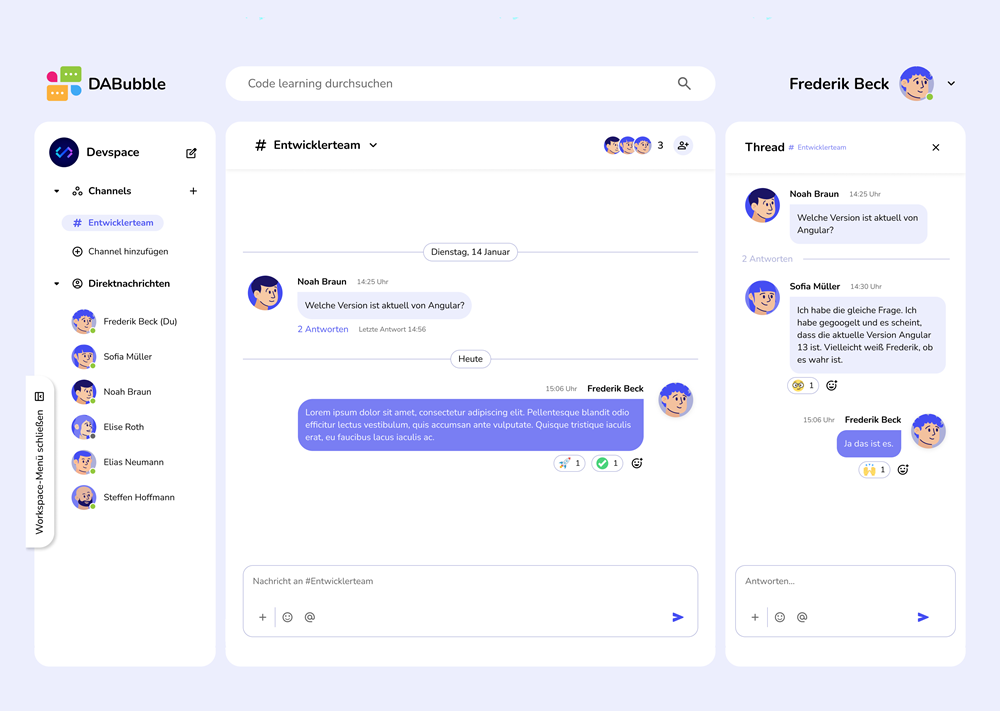

DABubble
Description
This App is a Slack Clone App. It revolutionizes team communication and collaboration with its intuitive interface, real-time messaging, and robust channel organization.
Implementation Details
As a team, we developed a Kanban board, where I actively contributed and took responsibility for specific tasks – mainly in the front-end area. Using agile methods, I was able to work in a structured and independent way while collaborating closely with the team.
Duration: 3 weeks
JavaScript
HTML
CSS
